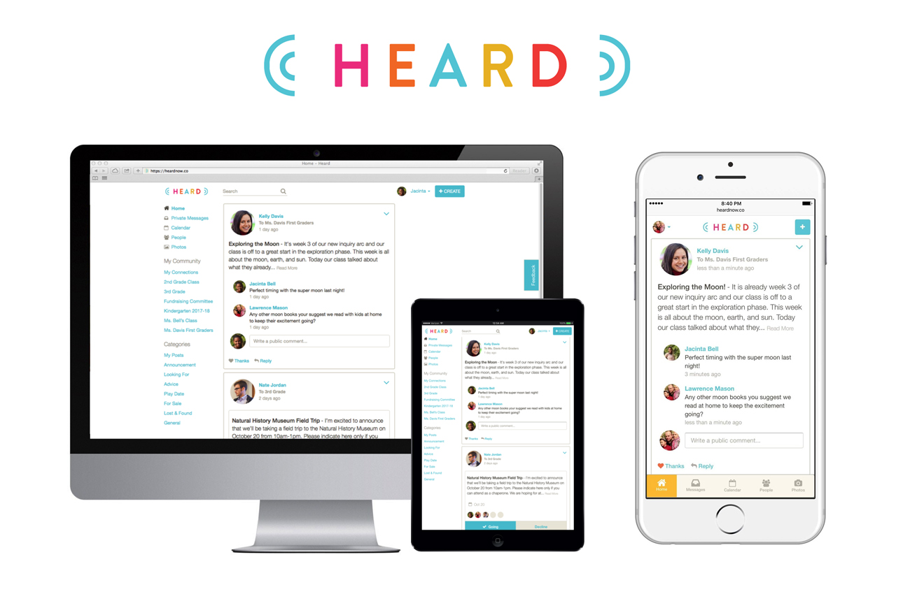
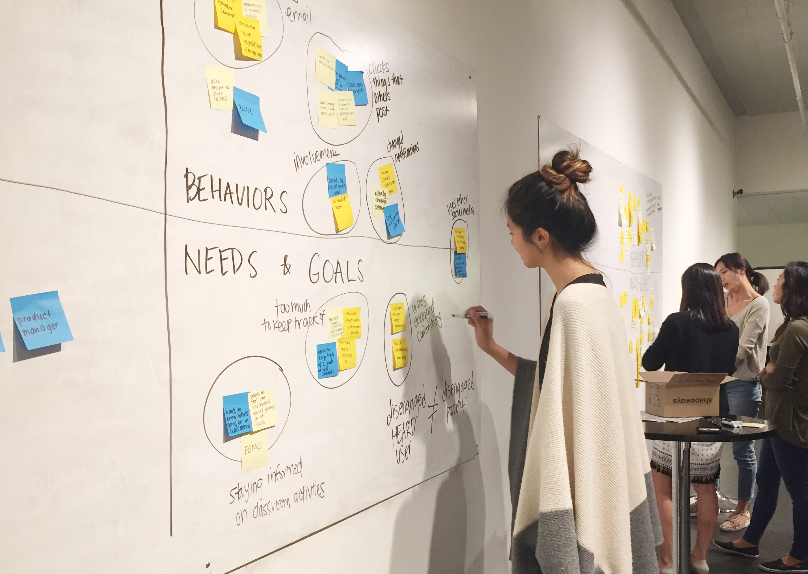
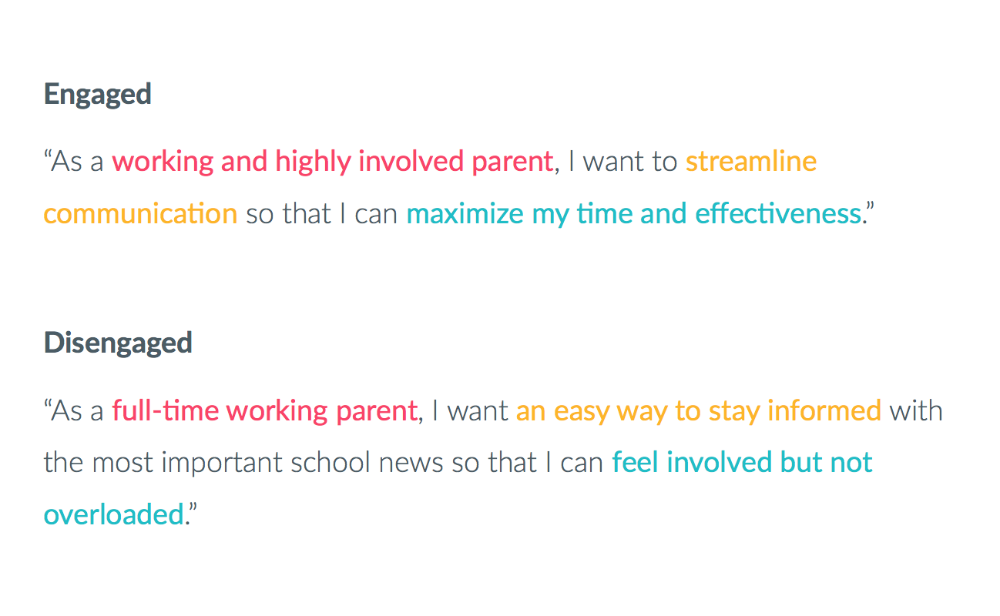
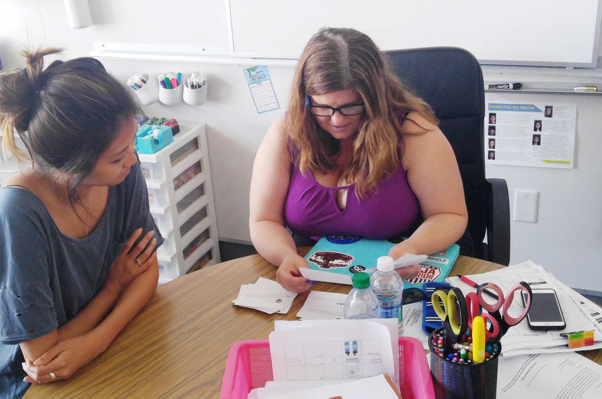

Heard User Research
Helping parents and teachers stay engaged in their school community.
Background & Objectives
Heard is a secure online platform where parents, teachers, and school leaders can communicate. The founders were interested in conducting user research to figure out ways to increase user engagement. From previous research they had hypothesized that improving onboarding and news feed prioritization would significantly impact engagement. Our team set out to discover ways to improve the experience for parents in the hopes of increasing engagement.
User Interviews
We conducted one-on-one interviews with highly engaged and disengaged parents. With the highly engaged parents, we wanted to know what kept them using Heard, the level of engagement they had, and what kind of updates were inmportant to them when it came to the school community. With the least engaged parents, we wanted to know why they weren't using Heard, how they stayed involved in the community, what communication methods they were currently using, and what they were looking for in terms of streamlining school communication.
Synthesis
 We distilled important findings from each of our interviews and used affinity mapping to uncover the most salient needs, goals and behaviors. We created personas and job stories for engaged and disengaged parents. We found that both engaged and disengaged parents were suffering from information overload with all the different channels of communication available - email, text messaging, the school portal, and Heard. As parents, they wanted to feel as if they were engaged in their children's lives but they couldn't keep up with the different forms of communication, especially within the app when they weren't prioritized in terms of importance.
Card Sort Activity
We conducted card sort activities with teachers and parents to discern the types of categories that posts naturally fell into, as well as the relative importance of these posts. We had a synthesizing session where we discussed trends and patterns from our results and created categories for the natural groupings that arose, then determined the level of prioritization for each category.
Findings
Parents were mainly concerned with getting the most urgent and time sensitive information as notifications. In terms of the news feed, the highest priority were administrative posts such as teacher/school announcements and school events. The second tier was posts that required some sort of action taken (parent communication and outside events), and finally the third tier was passive posts (classifieds, pictures and resources). With these findings, the team moved forward to prototype and test a solution for an improved news feed and notification experience.